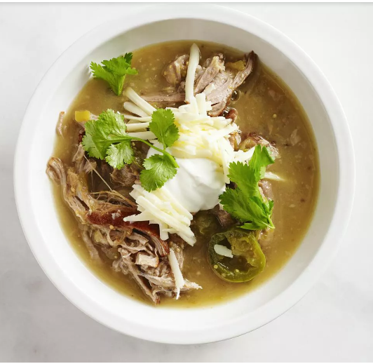

Slow Cooker Guisado Verde

Ingredients
- 2 tablespoons vegetable oil
- 2 pounds boneless pork shoulder
- 1 large onion
- 3 cloves garlic
- 2 (12 ounce) cans tomatillos
- 1 (7 ounce) can diced green chile peppers
- 2 fresh jalapeno peppers
- 1/2 cup fresh chopped cilantro
- 1 teaspoon dried oregano
- salt and pepper to taste
- 1 quart water
- 1 cup shredded Monterey Jack cheese
- 1/4 cup sour cream
- 4 sprigs fresh cilantro
Directions
- Heat the oil in a large skillet over medium heat
- In the skillet with the pork juices over medium heat
- Mix the tomatillos
- Shred the cooked pork with a fork. Spoon the slow cooker mixture into bowls